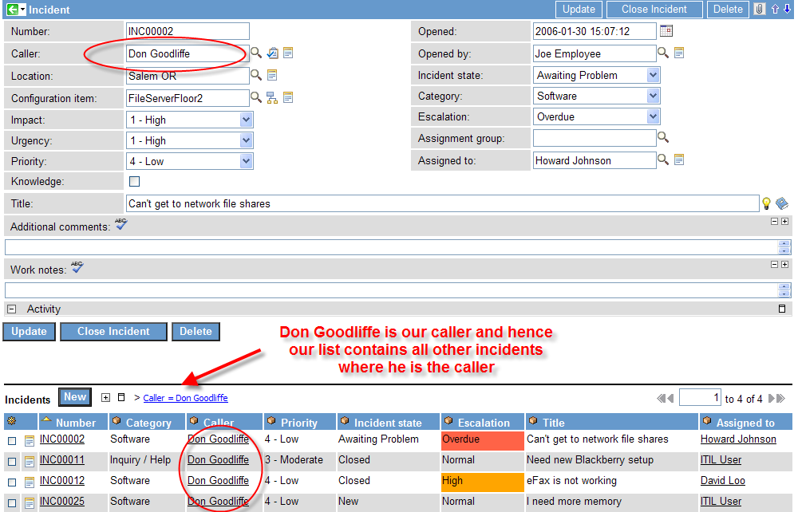
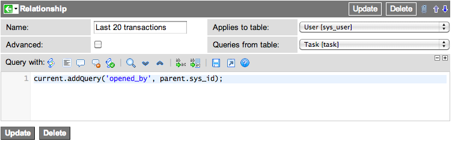
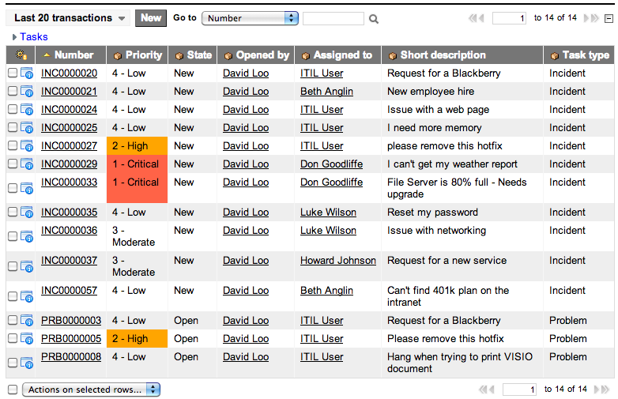

Creating Defined Related Lists
| |
Note: This article applies to Fuji. For more current information, see Create Defined Related Lists at http://docs.servicenow.com
The ServiceNow Wiki is no longer being updated. Please refer to http://docs.servicenow.com for the latest product documentation. |
| |
Functionality described here requires the Admin role. |
Contents
1 Overview
When viewing a record within the system, an administrator has the option to add default Related Lists to the form. One might, for example, include a list of related incidents at the bottom of a problem record, or a list of members at the bottom of a group record. This functionality is dependent on reference fields or many-to-many table relationships. If two tables are related via the system dictionary, one can appear as a related list on the other.
Defined Related Lists allow relationships between arbitrary tables to be expressed as a related list. Any two tables which can have a logical relationship can appear as a parent/child pair via a related list. Some examples:
- On an incident record, show all incidents opened by the same caller.
- On a user record, show the last 20 transactions that user has made.
- On an incident record, show all problems opened on the reported CI.
These relationships are above and beyond those normally defined in the system dictionary through reference fields and many-to-many relationships.
2 Creating Defined Related Lists
Every related list requires a relationship record. Before creating a new relationship, verify that there is not an existing relationship record that already provides the needed information. Use these steps to create a new relationship record:
- Click System Definition > Relationships.
- Click the New button.
- Specify the relationship record fields.
Field Description Name Type the name of the related list. The form configuration page displays this name in the list of available lists. Advanced Select this checkbox to use JavaScript in place of the Applies to table and Queries from table fields. Applies to table Select the table on which the related list appears. This field is hidden in Advanced relationship records. Apply to Type a script to specify the table on which the related list appears. This field is only visible with the Advanced checkbox selected. Queries from table Select the table from which this related list retrieves data. This field is hidden in Advanced relationship records. Query from Type a script to specify the table from which this related list retrieves data. This field is only visible with the Advanced checkbox selected. Query with Type a script to specify the records to include from the table the relationship queries. Insert Callback (Optional) Type a script to run after a successful insert action. This field is only visible with the Advanced checkbox selected.
- Save the record.
{kind=link}
{kind=link}
2.1 Example: Incidents by Same Caller
This example adds the existing relationship Incidents by Same Caller to incident forms.
- Applies to table: This list appears as an available related list when viewing an incident record.
- Queries from table : This list displays a list of incidents.
- Query with: This script selects records where the caller_id matches the caller_id of the parent record (the incident we are viewing).
{kind=link}
- Open an incident.
- Right-click the header and select the appropriate option for your version:
- The name of the existing relationships appear in your list of available lists.
- Move the Incidents by Same Caller list to the Selected list.
- Click Save.
- image:relationship3.png
{kind=link}
2.1.1 Notes and Limitations
- If you click the New button on one of these new relationships, the system will attempt to ensure that the freshly created record matches the list conditions. For example, clicking New on our example list above would result in an incident where the caller_id was pre-populated with Don Goodliffe.
- When scripting your condition, current is the record to which you want to add queries while parent is the main record being displayed.
- These relationships will not refresh until you update a form. What this means in our example is that if you changed the caller from Don Goodliffe to Fred Luddy, the list at the bottom of the screen would still display Don Goodliffe's incidents until you saved the incident.
- You are not limited to a single query condition. It is, for example, quite possible to have a related list of all incidents opened by the same caller in the last week, or all open incidents opened by the same caller.
- The current and parent objects cannot be used with the Queries from field. Instead, the gs object is available for GlideSystem calls.
- The Edit button is not available on defined relationships, as the relationship is completely scripted.
2.2 Example: Transactions by User
This example adds a new relationship "Last 20 transactions" to the user form. The new relationship should create a list of task records opened by the current user.
- Navigate to System Definition > Relationships.
- Click New.
- Create a new relationship with these values:
- Name: Last 20 transactions
- Applies to table: User [sys_user]
- Queries from table: Task [task]
- Queries with:
current.addQuery('opened_by', parent.sys_id);
- New relationship record for "Last 20 transactions"
- Click Submit.
- Navigate to User Administration > Users.
- Select any user. For example, David Loo.
- Configure the related lists for the user form.
- Add the related list Last 20 transactions.
- Navigate to User Administration > Users.
- Select any user. For example, David Loo.
- The Last 20 transactions related list should display all task records opened by the current user.
- Tasks opened by user in the "Last 20 transactions" related list
{kind=link}
{kind=link}
2.2.1 Notes and Limitations
- This query returns all task records opened by the user. The related list simply defaults to displaying 20 task records per page.
- The parent variable refers to the Applies to table. In this case, the applies to table is the User [sys_user] table.
- Querying against a record sys_id is a common query method for relationships.